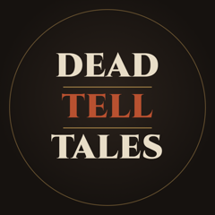

Dead Tell TalesAncient cold cases, told by the dead themselves
Dead Tell Tales is a YouTube documentary channel about unsolved cases from the distant past. Each documentary takes one case and follows the evidence: bones, wounds, DNA, burials, and the scientists who read them. It is built from peer-reviewed studies, excavation reports and museum records.
Credits
Every video uses museum photos, figures from scientific papers, maps and music under their own licences. The full list of authors and licences for each video is published on this site, in its credits page.